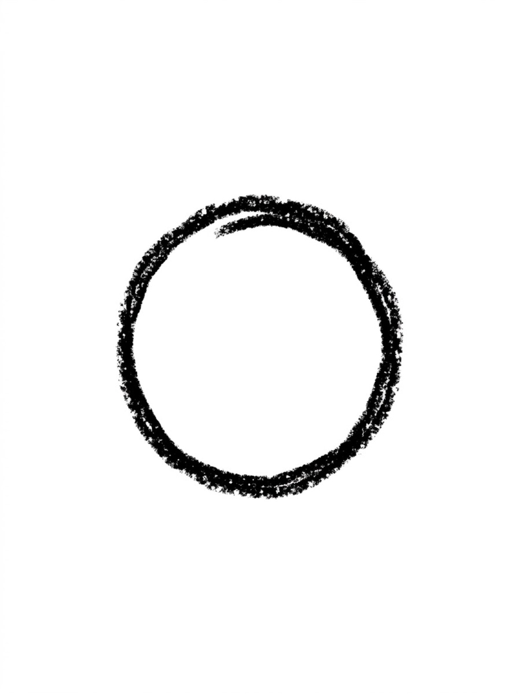
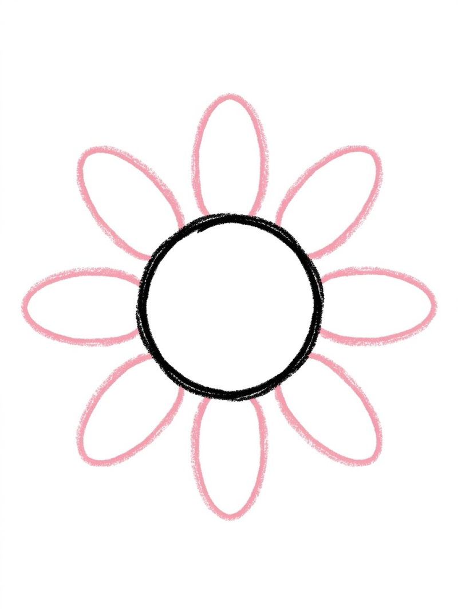
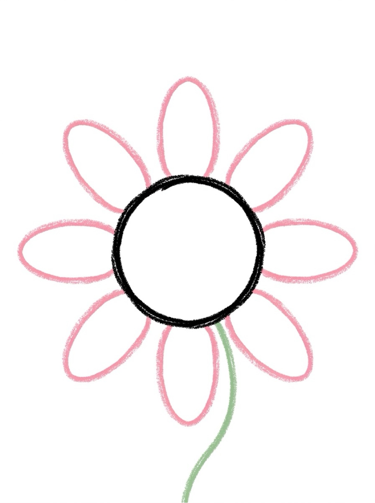
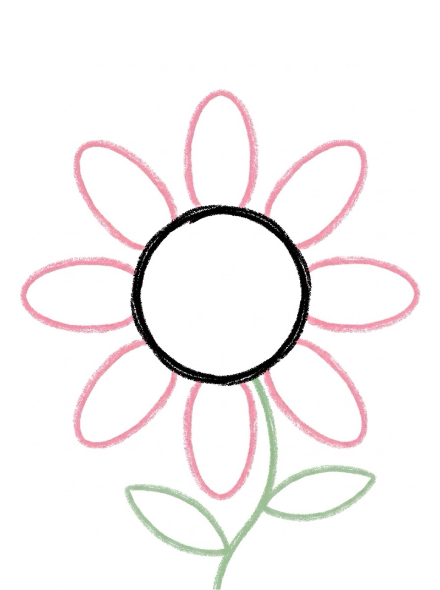
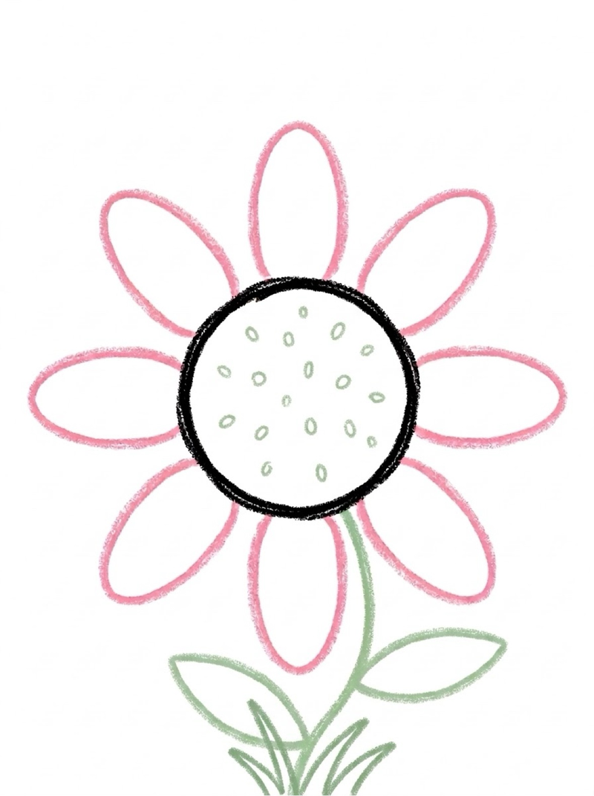
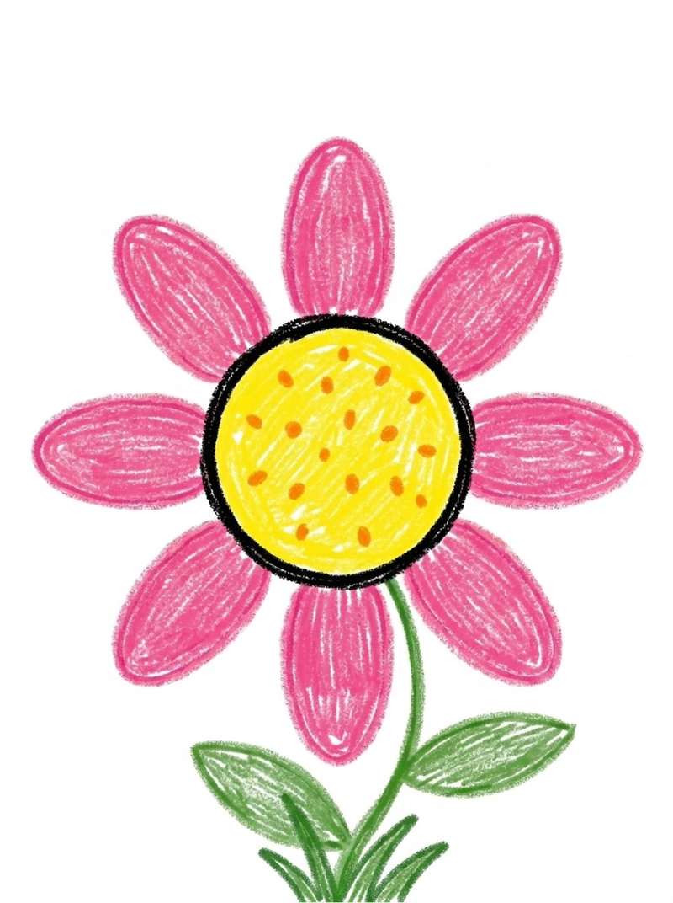

Flower Drawing for Kids How to Draw a Flower in 6 Easy Steps
Quick Answer
This free step-by-step tutorial shows kids how to draw a flower in six easy steps: a circle center, oval petals, a curved stem, two leaves, and pretty details. Download the printable PDF, grab crayons, and follow along together. Made for ages 3 and up — no signup needed, just print and draw. It is an easy flower drawing for a first try — and the same circle-and-petal method is how to draw flowers easy at any age.
At a Glance
- Subject: How to draw a flower
- Ages: 3+
- Steps: 6 steps
- Time: ~15 min
- Difficulty: Easy
- Supplies: Paper, crayons
Flowers are the perfect first drawing — every kid has seen one, and the shape is forgiving. This flower is built from a circle and ovals, so even wobbly petals look charming. The petal-counting step does quiet math practice while they draw.
✏️ How to Draw a Flower: Step by Step
One step per box — draw each new part in a different color so kids can see exactly what changed.
Step 1: The Center

Draw a circle in the middle of your paper. This round shape becomes the middle of your flower.
Step 2: The Petals

Draw oval petals all around the circle, like sun rays. Six or eight petals is perfect — they don't have to match exactly.
Step 3: The Stem

Draw a curved line going down from the flower. A little curve makes it look like it's swaying in the breeze.
Step 4: The Leaves

Add two leaf shapes on the stem, one on each side. Pointy ovals are all you need.
Step 5: The Details

Add tiny dots in the circle for seeds and a few grass blades at the bottom. Details make it yours!
Step 6: Color It In

Color your flower! Yellow center and pink petals is classic, but rainbow petals are even more fun.
📊 Flower Drawing by Age
Every age can join in — just adjust the job.
| Age | What they can do | Tip |
|---|---|---|
| 3–4 | Trace the circle and petals on the printable | Draw the stem for them — the long curve is tricky |
| 4–5 | Follow all 6 steps with a little help | Count the petals together — great number practice |
| 6+ | Draw solo and design their own flower garden | Challenge: draw three flowers in different colors |
🖨️ Download Your Free Flower Drawing Printable
The printable lays out all 6 steps one per box, big enough for little hands — kids draw right alongside each step.
⬇️ Open Free Printable 🖨️ Print🎁 Free printable for ages 3+
🌸 Flower Garden Challenge
An easy flower drawing becomes a garden when you draw it three times and change one thing each time. Draw three flowers side by side and make each one different — different petal counts, different colors, different heights. Line them up into a garden row and add a sun in the corner. Comparing petal shapes builds observation skills, and the garden layout sneaks in a little pattern thinking.
🌸 Flowers in the Real World
A flower is a plant's way of making seeds: the petals advertise, visiting bees and butterflies carry pollen from bloom to bloom, and the plant turns that visit into the next generation. Flowers time their lives carefully — some open only in the morning, some only at night for moths, and the biggest flower in the world, the rafflesia, smells like rotting meat to attract its particular flies.
That range is why flowers repay drawing: a daisy's wheel, a tulip's cup, and a sunflower's face are all the same idea restyled. Ask your child what kind theirs is — a garden flower, a wildflower, or one nobody has discovered yet, which will need a name by dinnertime.
What You'll Need to Draw a Flower
Grab crayons or washable markers — flowers are the perfect excuse to use every color in the box. You'll want yellow or orange for the center, plus pinks, reds, or purples for petals and green for the stem and leaves. Standard printer paper works fine, though thicker paper holds up better if your kid presses hard with crayons.
What They're Learning
This flower tutorial practices circles and ovals — the petals are just ovals arranged in a ring, which teaches radial symmetry without the fancy words. Drawing the same petal shape six to eight times builds fine motor control through repetition, and counting petals sneaks in early math. The curved stem and leaves add gentle curve practice for little hands.
Make It Yours
Once the basic flower is done, try these twists: make the petals different colors like a rainbow flower, add a smiling face in the center, or draw a bee visiting the flower. Kids can also draw a whole garden — tall sunflowers, tiny daisies, and one giant flower that fills the whole page. Different petal shapes (round, pointy, wavy) make every flower unique.
🛒 Our Favorite Drawing Supplies
These are the supplies we reach for in our own home — washable (because kids), quality paper, and enough colors to avoid fights.
As an Amazon Associate, MomYouNeedThis earns from qualifying purchases — at no extra cost to you.
💡 Flower Drawing Tips for Parents
Parents ask how to draw flowers easy when a first attempt ends in tears — the fix is a bigger circle and fewer petals. If the petals come out uneven, that's fine — real flowers aren't symmetrical either. The goal is a flower your child recognizes, not a perfect one. If your child gets stuck on the petals, draw one petal yourself on a scrap piece of paper and let them copy it. Most kids nail it after one demo.
Two things that help with every flower drawing attempt: let them pick the colors (a blue flower is still a flower), and don't fix their drawing. If they ask for help, draw on a separate piece of paper, not on theirs. Kids who feel ownership of their drawing come back for the next one; kids who feel corrected stop trying. The goal is a flower they're proud of, not a perfect one.
🌻 Sunflower Drawing
A sunflower drawing starts the same way as any flower: a circle in the center, then petals around it. For a sunflower drawing, make the petals long and pointed, like sun rays, and add tiny seed dots in the brown center. The big center circle is what makes it read as a sunflower right away.
Kids love a sunflower drawing because it is big, bold, and forgiving. The petals don’t need to be even — real sunflowers aren’t either. A thick green stem and one wide leaf finish it, and yellow crayon does the rest.
Follow the six-step flower tutorial on this page, but swap in long pointed petals and a brown center for a sunflower drawing your child will be proud of.
See free flower printable for more.
🌺 Hibiscus Flower Drawing
A hibiscus flower drawing looks fancy, but it is just five big petals and one long stamen. Start with a small circle in the center, then draw five wide, rounded petals around it — a hibiscus flower drawing has petals that overlap slightly, which is what gives it that tropical look.
The secret to a hibiscus flower drawing is the stamen: one curved line sticking out from the center with tiny dots on the end. Kids love adding it because it makes the flower look real. Pink, red, or orange crayons all work beautifully.
Use the flower tutorial on this page as your base, then add the five wide petals and long stamen to turn it into a hibiscus flower drawing — the classic bloom to start with when kids want to learn how to draw Hawaiian flowers.
See free flower printable for more. Plant neighbours for your flower with how to draw a butterfly above it and how to draw a leaf beside it.
🌸 Sakura Flower Drawing
A sakura flower drawing — a cherry blossom — is one of the gentlest flowers to draw. Five small rounded petals around a tiny center, in soft pink. A sakura flower drawing works best when the petals are small and close together, like a little pink star.
Draw one sakura flower drawing on its own, or cluster three or four on a branch for a cherry-blossom branch. A thin brown branch with a few pink blossoms is a lovely spring picture, and every blossom uses the same five-petal shape.
Start with the flower tutorial on this page, make the petals smaller and pinker, and you have a sakura flower drawing. Add a branch and a few more blossoms to make a whole spring scene.
See free flower printable for more.
💐 How to Draw a Bouquet of Flowers
Learning how to draw simple flowers first makes a bouquet easy — the same flower, drawn three times at different heights. Once kids can draw one flower, the next question is how to draw a bouquet of flowers. The trick is simple: draw three flowers at different heights, then wrap them with a triangle for the paper cone. Learning how to draw a bouquet of flowers is just drawing one flower three times, then adding the wrap.
To learn how to draw a bouquet of flowers, start with the tallest flower in the middle, then add one on each side slightly lower. A ribbon bow at the bottom of the cone makes it look like a real gift.
Use the flower tutorial on this page three times, then draw the cone and bow. That is how to draw a bouquet of flowers — and it makes a wonderful card for grandparents.
See free flower printable for more.
💐 How to Draw a Bunch of Flowers
Knowing how to draw a bunch of flowers turns one flower into a whole garden picture. Draw three or four flowers close together, with stems that meet at one point at the bottom — that is how to draw a bunch of flowers. The stems meeting is what makes it look like a bunch instead of separate flowers.
When you learn how to draw a bunch of flowers, vary the sizes: one big flower, two medium, one small bud. Different sizes make the bunch look natural, like flowers picked from a garden.
Practice with the flower tutorial on this page, then group the flowers together. That is how to draw a bunch of flowers — perfect for a birthday card.
See free flower printable for more.
🥰 The Face Does All the Work
Learning how to draw cute flowers is all about the face. Add two dot eyes and a tiny smile to the center circle, and any flower becomes cute. That is the whole secret of how to draw cute flowers — the face does all the work.
When you practice how to draw cute flowers, keep the petals round and the colors soft. Round petals read as friendly; pointy petals read as grown-up. Pink, lavender, and sunny yellow are the cutest colors.
Follow the flower tutorial on this page, add a smiley face in the center, and you have learned how to draw cute flowers. Kids love giving their flowers names.
See free flower printable for more.
❓ Flower Drawing FAQs
What is the easiest way for a kid to draw a flower?
Start with a small circle in the center for the flower's center. Draw oval petals around it like sun rays, then add a curved stem going down, two leaf shapes on either side, and tiny seed dots in the center. Circles and ovals do all the work — no tricky shapes needed.
What age can kids start learning to draw a flower?
Most kids can follow the circle-and-petal method around age 4 with a grown-up helping, and draw one on their own by ages 5 to 6. Younger children can trace the center circle and petals on the printable.
What supplies do we need to draw a flower?
Just paper and crayons or markers. The free printable PDF lays out all six steps one per box so kids can draw right alongside each step. Yellow, pink, or purple crayons make great petals.
Is the flower drawing printable really free?
Yes — every printable on MomYouNeedThis is 100% free to download and print. No signup, no payment, just tap the download button.
Where can I find an easy flower drawing for kids?
Right here — this page's flower is the simple five-petal kind, and the printable below is free, no signup needed. When your child wants the garden to grow, the sunflower and sakura tutorials are the natural next beds to plant.
How do I print the flower drawing tutorial?
Open the PDF and print at 100% scale (not 'fit to page') so the drawing boxes stay big enough for little hands. The printable is designed to stay large — never shrunk to force a fit.
How do you make a sunflower drawing for kids?
Draw a big circle for the center, add long pointed petals around it like sun rays, dot the center with seeds, then add a thick stem and a leaf. That is the whole sunflower drawing in four steps.
What makes a hibiscus flower drawing different from a regular flower?
A hibiscus flower drawing has five wide overlapping petals and one long curved stamen sticking out from the center. Those two details are what make it read as a hibiscus.
How do you make a sakura flower drawing for kids?
Work in the softest pink you have, and think branch, not single flower: sakura reads as cherry blossom when several five-petal blooms cluster along a curving brown branch. The sakura tutorial on this site builds the single flower; the branch arrangement is the picture.
What is the easiest way to learn how to draw flowers easy?
Start with a center circle, add oval petals around it, then a stem and leaves. That circle-and-petal method is how to draw flowers easy for any age.
How do you teach kids how to draw simple flowers?
Teach kids how to draw simple flowers with big shapes: a center circle, five oval petals, a stem, and two leaves. Big shapes and one step at a time keep it fun.
What are the steps for drawing flowers step by step easy?
This page keeps it to one flower at a time: a center to anchor the petals, a ring of petals around it, then a stem and leaves to hold the whole thing up. Copy each picture in order — the newest part is always drawn in a fresh color.
How do I learn how to draw a bouquet of flowers?
Start with flowers your child can already draw — three of this page's simple blooms — and arrange them like a florist: tall stems at the back, shorter ones in front, leaves tucked between. The paper cone and bow go on last; the bouquet is the flowers, the wrapping is just the frame.
What is the trick for how to draw a bunch of flowers?
Stems tell the story. Draw each flower on its own stem, then angle all the stems so they converge low on the page, at the point where one hand could hold them. Varied heights above, one meeting point below — that convergence is what turns separate flowers into a bunch.
What is the trick for how to draw cute flowers?
Faces and proportions do it: trade the plain center for two dot eyes and a small smile, keep the petals short and round rather than long and pointy, and stay in soft colors. Roundness plus a face is the entire recipe.
📚 Keep Exploring
- ✏️ All 76 Drawing Tutorials 76 free step-by-step drawing tutorials for kids.
- 🌹 Rose Drawing Free step-by-step rose drawing tutorial for kids.
- 🐾 Animal Coloring Free printable animal coloring pages for little learners.
- ✏️ Drawing Practice Free printable drawing pre-writing worksheet for toddlers.